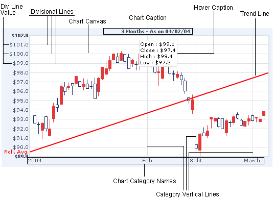

Candlestick Chart > Anatomy
A Candlestick chart consists of various elements. Given below is a capture of what a few of the elements look like:

We'll next see how to render the XML document for the candlestick chart.